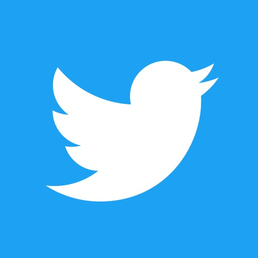

Instagram — приложение для обмена фотографиями и видеозаписями с элементами социальной сети, позволяющее снимать фотографии и видео, применять к ним фильтры, а также распространять их через свой сервис и ряд других социальных сетей.
 Instagram
Instagram
Twitter — социальная сеть для публичного обмена сообщениями при помощи веб-интерфейса, SMS, средств мгновенного обмена сообщениями или сторонних программ-клиентов для пользователей интернета любого возраста.
 TwitterTikTok — сервис для создания и просмотра коротких видео, принадлежащий пекинской компании «ByteDance». Запущенная летом 2018 года международная версия является ведущей видеоплатформой для коротких видео в Китае и становится всё более популярной в других странах, став одним из наиболее быстрорастущих и скачиваемых приложений.
 TikTok
TikTok
| Соцсеть | Количество пользователей |
|---|---|
| 2.74 Billion Active Users | |
| YouTube | 2.291 Billion Active Users |
| TikTok | 689 Million Active Users |
| Snapchat | 498 Million Active Users |
| Douyin | 600 Million Active Users |
| 2.291 Billion Active Users | |
| 1.221 Billion Active Users | |
| Kuaishou | 481 Million Active Users |
| Sina Weibo | 511 Million Active Users |
| Telegram | 500 Million Active Users |
| 430 Million Active Users | |
| Weixin/WeChat | 1.213 Billion Active Users |
| 442 Million Active Users | |
| 617 Million Active Users | |
| Facebook Messenger | 1.3 Billion Active Users |
| 2.74 Billion Active Users |
Цитата с сайта relevant.ru
Медиалогия провела исследование по упоминаемости платформ в соцсетях в августе 2019 года. Рассматривался русскоязычный сегмент соцмедиа (Twitter, ВКонтакте, Одноклассники, Facebook, Instagram, Youtube, LiveJournal, форумы и блоги). Учитывались данные без самоцитирования. Лидером по упоминаниям стал YouTube - 24,7 млн сообщений, следом за ним идут Instаgram - 13 млн и ВКонтакте - 8,2 млн
Некоторые СМИ утверждают, что в соцсетях действуют так называемые группы смерти, которые пропагандируют суицид и могут довести детей до самоубийства. В 2016-м году Роспотребнадзор заявил, что более трети материалов, описывающих способы добровольного ухода из жизни и агитирующих к ней собрано в социальной сети ВКонтакте. С 7 июня 2017 года в России действует закон об уголовной ответственности за создание «групп смерти» в интернете предусматривающий до 6 лет лишения свободы. Создатель социальной сети ВКонтакте Павел Валерьевич Дуров в своём интервью DLD Conference упоминал про проблемы интернет-троллинга и обещал решить их, создав новую социальную сеть LiveOnce, используя уже готовые серверные решения и протоколы Telegram.
Wikipedia